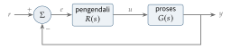
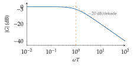
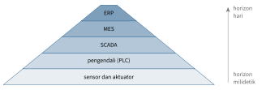

Bab 19
Mengendalikan Sistem
Di semester pertama saya mengambil dua mata kuliah yang sekilas tidak ada hubungannya dengan machine learning. Control systems membahas sistem dinamis linear dari model ruang keadaan sampai pengendali diskret, dengan latihan dan ujian berbasis MATLAB. Production automation systems membahas dunia pabrik: perangkat otomasi, sistem waktu nyata, pemrograman PLC, fieldbus, dan standar IEC 61499 untuk sistem otomasi terdistribusi. Belakangan terlihat bahwa teori kendali adalah saudara kandung reinforcement learning, dan bahwa model ruang keadaan adalah bahasa yang sama yang dipakai Kalman filter, state space model seperti Mamba, dan penemuan persamaan dari data.
Sistem dan model
Sebuah sistem dinamis dijelaskan oleh keadaannya, sekumpulan besaran yang cukup untuk menentukan masa depannya kalau input diketahui. Kuliah memakai tiga contoh yang terus kembali.
Contoh pertama adalah rangkaian RC. Arus yang mengisi kapasitor sebanding dengan selisih tegangan sumber \(u\) dan tegangan kapasitor \(v\), dibagi hambatan, sehingga \(C\dot v=(u-v)/R\), atau \[\dot v=-\frac1\tau v+\frac1\tau u,\qquad\tau=RC.\] Untuk input langkah setinggi \(U\) mulai dari \(v(0)=0\), solusinya \(v(t)=U\big(1-e^{-t/\tau}\big)\). Setelah satu konstanta waktu, kapasitor terisi \(1-e^{-1}\approx63\) persen. Setelah lima konstanta waktu, lebih dari 99 persen. Dengan \(R=10\ \mathrm{k\Omega}\) dan \(C=100\ \mu\mathrm F\), \(\tau=1\) detik. Hampir setiap sistem yang “menyusul” targetnya secara perlahan, dari termometer sampai suhu ruangan, punya perilaku orde satu seperti ini.
Contoh kedua adalah kaskade tangki air. Untuk satu tangki dengan luas penampang \(A\), ketinggian air \(h\) berubah menurut neraca massa: debit masuk dikurangi debit keluar. Debit keluar lewat lubang di dasar mengikuti hukum Torricelli, sebanding dengan \(\sqrt h\), sehingga \[A\dot h=q_{\mathrm{in}}-k\sqrt h.\] Model ini nonlinear. Di sekitar titik kesetimbangan \(h_0\), tempat \(q_{\mathrm{in}}=k\sqrt{h_0}\), kita bisa melinearkannya dengan mengganti \(\sqrt h\) dengan garis singgungnya, \(\sqrt h\approx\sqrt{h_0}+(h-h_0)/(2\sqrt{h_0})\). Penyimpangan kecil \(\Delta h=h-h_0\) lalu memenuhi \(A\,\dot{\Delta h}=\Delta q_{\mathrm{in}}-\frac{k}{2\sqrt{h_0}}\Delta h\), sistem orde satu dengan konstanta waktu \(2A\sqrt{h_0}/k\). Tangki yang lebih penuh bereaksi lebih lambat, karena perubahan kecil ketinggian hanya sedikit mengubah debit keluar.
Contoh ketiga adalah persamaan pemangsa dan mangsa Lotka–Volterra, \(\dot x=ax-bxy\) dan \(\dot y=-cy+dxy\), dengan \(x\) mangsa dan \(y\) pemangsa. Kesetimbangan yang menarik berada di \((c/d,\,a/b)\). Matriks Jacobian di titik itu adalah \[\boldsymbol J=\begin{pmatrix}0&-bc/d\\ad/b&0\end{pmatrix},\] dengan nilai eigen \(\pm i\sqrt{ac}\), murni imajiner. Linearisasinya berosilasi tanpa meluruh dan tanpa tumbuh, sesuai dengan siklus naik turun yang khas pada populasi: mangsa yang berlimpah membuat pemangsa bertambah, pemangsa yang banyak membuat mangsa berkurang, dan seterusnya, dengan periode sekitar \(2\pi/\sqrt{ac}\).
Bentuk umumnya adalah \(\dot{\boldsymbol{x}}=\boldsymbol f(\boldsymbol{x},\boldsymbol u)\) dan \(\boldsymbol{y}=\boldsymbol h(\boldsymbol{x},\boldsymbol u)\), dengan \(\boldsymbol u\) input yang bisa kita atur dan \(\boldsymbol{y}\) keluaran yang bisa kita ukur. Sebagian besar teori dibangun untuk sistem linear yang tidak berubah terhadap waktu, \[\dot{\boldsymbol{x}}=\boldsymbol{A}\boldsymbol{x}+\boldsymbol B\boldsymbol u,\qquad \boldsymbol{y}=\boldsymbol C\boldsymbol{x}+\boldsymbol D\boldsymbol u,\] dan sistem nonlinear dilinearkan di sekitar kesetimbangannya dengan matriks Jacobian, persis seperti pada tangki dan populasi tadi.
Solusi, mode, dan kestabilan
Solusi sistem linear adalah \[\boldsymbol{x}(t)=e^{\boldsymbol{A}t}\boldsymbol{x}_0+\int_0^te^{\boldsymbol{A}(t-\tau)}\boldsymbol B\boldsymbol u(\tau)\,\mathrm{d}\tau,\] respons terhadap keadaan awal ditambah respons terhadap input. Prinsip superposisi berlaku: respons terhadap jumlah input adalah jumlah responsnya. Kalau \(\boldsymbol{A}\) bisa didiagonalkan, \(\boldsymbol{A}=\boldsymbol V\boldsymbol\Lambda\boldsymbol V^{-1}\), maka \(e^{\boldsymbol{A}t}=\boldsymbol Ve^{\boldsymbol\Lambda t}\boldsymbol V^{-1}\), dan sistem terurai menjadi mode-mode independen yang masing-masing berkembang seperti \(e^{\lambda_it}\). Nilai eigen real negatif berarti peluruhan, nilai eigen kompleks berarti osilasi dengan frekuensi sebesar bagian imajinernya. Kalau \(\boldsymbol{A}\) tidak bisa didiagonalkan, bentuk Jordan memberi mode yang dikalikan polinomial dalam \(t\), seperti \(te^{\lambda t}\).
Sistem stabil secara asimtotik, artinya kembali ke kesetimbangan dari gangguan apa pun, tepat ketika semua nilai eigen \(\boldsymbol{A}\) punya bagian real negatif. Matriks seperti ini disebut Hurwitz. Untuk sistem nonlinear, kestabilan linearisasinya menentukan kestabilan lokal, kecuali ketika ada nilai eigen di sumbu imajiner, seperti pada Lotka–Volterra, di mana linearisasi tidak cukup untuk memutuskan.
Bisa dicapai, bisa diamati
Dua pertanyaan menentukan apakah sebuah sistem bisa dikendalikan dengan baik. Pertama, apakah input bisa membawa keadaan ke mana saja? Untuk sistem linear, jawabannya ya tepat ketika matriks keterjangkauan \[\mathcal R=\big[\boldsymbol B\ \ \boldsymbol{A}\boldsymbol B\ \ \boldsymbol{A}^2\boldsymbol B\ \cdots\ \boldsymbol{A}^{n-1}\boldsymbol B\big]\] berpangkat penuh. Kedua, apakah keadaan bisa direkonstruksi dari keluaran? Jawabannya ya tepat ketika matriks keteramatan, yang disusun dari baris-baris \(\boldsymbol C,\boldsymbol C\boldsymbol{A},\dots,\boldsymbol C\boldsymbol{A}^{n-1}\), berpangkat penuh.
Contoh paling sederhana memperlihatkan maknanya. Untuk massa tanpa gesekan yang didorong gaya, \(\ddot x=u\), keadaannya posisi dan kecepatan, dengan \(\boldsymbol{A}=\begin{pmatrix}0&1\\0&0\end{pmatrix}\) dan \(\boldsymbol B=\begin{pmatrix}0\\1\end{pmatrix}\). Matriks \([\boldsymbol B\ \boldsymbol{A}\boldsymbol B]=\begin{pmatrix}0&1\\1&0\end{pmatrix}\) berpangkat dua, jadi sistemnya bisa dicapai: gaya saja cukup untuk membawa massa ke posisi dan kecepatan mana pun. Kalau yang diukur posisi, \(\boldsymbol C=(1\ \ 0)\), matriks keteramatannya identitas dan sistemnya teramati: kecepatan bisa disimpulkan dari perubahan posisi. Kalau yang diukur hanya kecepatan, \(\boldsymbol C=(0\ \ 1)\), matriksnya \(\begin{pmatrix}0&1\\0&0\end{pmatrix}\) berpangkat satu. Kita tidak akan pernah tahu posisi awal, karena menggeser seluruh lintasan tidak mengubah kecepatan sama sekali.
Dekomposisi Kalman memisahkan keadaan menjadi bagian yang bisa dicapai dan diamati, bagian yang hanya salah satunya, dan bagian yang tidak keduanya. Bagian yang tidak terjangkau dan tidak stabil adalah kabar buruk, karena tidak ada pengendali yang bisa menyelamatkannya. Kalau bagian itu stabil, sistemnya disebut stabilizable, dan untuk keperluan praktis itu sudah cukup.
Pengendali dan pengamat
Dengan umpan balik keadaan \(\boldsymbol u=-\boldsymbol K\boldsymbol{x}\), sistem tertutup menjadi \(\dot{\boldsymbol{x}}=(\boldsymbol{A}-\boldsymbol B\boldsymbol K)\boldsymbol{x}\), dan kita bisa memilih \(\boldsymbol K\) agar nilai eigen sistem tertutup berada di tempat yang kita inginkan, selama sistemnya bisa dicapai. Untuk massa tadi dengan \(u=-k_1x-k_2\dot x\), persamaan karakteristiknya \(s^2+k_2s+k_1=0\). Kalau kita menginginkan kedua kutub di \(-2\), polinomialnya harus \((s+2)^2=s^2+4s+4\), sehingga \(k_1=k_2=4\). Rumus Ackermann melakukan perhitungan yang sama untuk sistem satu input berukuran berapa pun: \(\boldsymbol K=(0\ \cdots\ 0\ 1)\,\mathcal R^{-1}\varphi(\boldsymbol{A})\), dengan \(\varphi\) polinomial karakteristik yang diinginkan.
Kalau keadaan tidak diukur seluruhnya, kita membangun pengamat yang menirukan sistem dan mengoreksi dirinya dengan galat keluaran, \[\dot{\hat{\boldsymbol{x}}}=\boldsymbol{A}\hat{\boldsymbol{x}}+\boldsymbol B\boldsymbol u+\boldsymbol L\big(\boldsymbol{y}-\boldsymbol C\hat{\boldsymbol{x}}\big).\] Mengurangkan persamaan ini dari persamaan sistem memberi dinamika galat perkiraan, \(\boldsymbol e=\boldsymbol{x}-\hat{\boldsymbol{x}}\): \(\dot{\boldsymbol e}=(\boldsymbol{A}-\boldsymbol L\boldsymbol C)\boldsymbol e\). Input \(\boldsymbol u\) hilang dari persamaan galat, sehingga galat perkiraan meluruh dengan laju yang kita pilih lewat \(\boldsymbol L\), terlepas dari apa yang dilakukan pengendali. Inilah inti prinsip pemisahan: pengendali dan pengamat bisa dirancang terpisah lalu digabung, dan kutub-kutub sistem gabungan adalah gabungan kutub keduanya. Biasanya pengamat dibuat beberapa kali lebih cepat dari pengendali, supaya perkiraannya sudah benar ketika pengendali membutuhkannya.
Pengendali optimal
Alih-alih memilih kutub sendiri, kita bisa meminta pengendali terbaik menurut sebuah biaya. Linear quadratic regulator meminimalkan \[J=\int_0^\infty\big(\boldsymbol{x}^\top\boldsymbol Q\boldsymbol{x}+\boldsymbol u^\top\boldsymbol R\boldsymbol u\big)\,\mathrm{d}t,\] yang menimbang seberapa jauh keadaan menyimpang terhadap seberapa besar tenaga kendali yang dipakai. Jawabannya tetap berupa umpan balik linear, \(\boldsymbol K=\boldsymbol R^{-1}\boldsymbol B^\top\boldsymbol P\), dengan \(\boldsymbol P\) solusi persamaan aljabar Riccati \(\boldsymbol{A}^\top\boldsymbol P+\boldsymbol P\boldsymbol{A}-\boldsymbol P\boldsymbol B\boldsymbol R^{-1}\boldsymbol B^\top\boldsymbol P+\boldsymbol Q=\boldsymbol0\).
Kasus skalar memperlihatkan isinya. Untuk integrator \(\dot x=u\) dengan biaya \(\int(qx^2+ru^2)\,\mathrm{d}t\), persamaan Riccati menyusut menjadi \(-p^2/r+q=0\), sehingga \(p=\sqrt{qr}\) dan \(K=p/r=\sqrt{q/r}\). Kalau galat posisi kita anggap seratus kali lebih mahal dari tenaga, \(q/r=100\), pengendalinya \(u=-10x\) dan sistem tertutupnya meluruh dengan konstanta waktu satu per sepuluh detik. Kalau tenaga yang mahal, pengendalinya lebih lembut dan lebih lambat. LQR mengubah pertanyaan “kutubnya di mana?” menjadi pertanyaan yang lebih bermakna bagi insinyur: “apa yang lebih penting bagi saya?”.
Ketika pengukurannya berisik, pengamat optimalnya adalah Kalman filter (Kalman 1960), dan gabungan LQR dengan Kalman filter disebut LQG. Dari sudut pandang Bab 16, LQR adalah masalah reinforcement learning yang modelnya diketahui sempurna, dinamikanya linear, dan biayanya kuadratik, sehingga persamaan Bellman bisa diselesaikan secara tertutup. Fungsi nilainya tidak lain adalah \(\boldsymbol{x}^\top\boldsymbol P\boldsymbol{x}\).
Domain frekuensi
Transformasi Laplace mengubah persamaan diferensial linear menjadi persamaan aljabar, karena turunan menjadi perkalian dengan \(s\). Hubungan antara input dan keluaran menjadi fungsi alih, \[G(s)=\boldsymbol C(s\boldsymbol I-\boldsymbol{A})^{-1}\boldsymbol B+\boldsymbol D.\] Untuk rangkaian RC tadi, \(G(s)=1/(\tau s+1)\). Sistem stabil dalam arti BIBO, yaitu input terbatas selalu menghasilkan keluaran terbatas, kalau semua kutub \(G(s)\) berada di setengah bidang kiri. Respons frekuensi \(G(i\omega)\) menyatakan bagaimana sinyal sinus diperkuat dan digeser fasenya. Untuk sistem orde satu, \(|G(i\omega)|=1/\sqrt{1+\omega^2\tau^2}\), yang pada \(\omega=1/\tau\) bernilai \(1/\sqrt2\), sekitar \(-3\) dB: frekuensi itulah batas antara yang diloloskan dan yang diredam. Diagram Bode menggambar magnitudo dan fase dalam skala logaritmik, sehingga sistem yang tersusun berurutan cukup dijumlahkan grafiknya.

Dalam lingkar umpan balik (Gambar 19.1), fungsi alih dari acuan ke keluaran adalah \(T(s)=L(s)/(1+L(s))\) dengan \(L=RG\) fungsi lingkar terbuka, dan dari acuan ke galat \(S(s)=1/(1+L(s))\). Kedua fungsi ini berjumlah satu, sebuah batasan mendasar: kita tidak bisa sekaligus mengikuti acuan dengan sempurna dan mengabaikan noise pengukuran di frekuensi yang sama.
Contoh dari kuliah memperlihatkan mengapa pengendali PI begitu populer. Ambil proses orde satu \(G=K/(\tau s+1)\) dan pengendali proporsional \(R=K_p\). Untuk acuan langkah, teorema nilai akhir memberi galat keadaan tunak \[e_\infty=\lim_{s\to0}s\cdot\frac1{1+K_pG(s)}\cdot\frac1s=\frac1{1+K_pK}.\] Dengan \(K=1\) dan \(K_p=9\), galatnya sepuluh persen, berapa lama pun kita menunggu. Menaikkan \(K_p\) mengecilkan galat tetapi membuat sistem semakin agresif. Menambahkan suku integral, \(R=K_p+K_i/s\), menempatkan \(s\) di penyebut \(L\), sehingga \(L(0)\) tak hingga dan galat keadaan tunaknya nol. Secara intuitif, selama masih ada galat sekecil apa pun, integralnya terus tumbuh dan mendorong input, sampai galatnya benar-benar hilang. Kestabilan lingkar tertutup kemudian diperiksa dengan kriteria grafis seperti kriteria Nyquist, yang membaca kestabilan dari kurva \(L(i\omega)\), dan margin fase menyatakan seberapa jauh sistem dari batas ketidakstabilan.
Merancang lewat respons frekuensi
Sistem orde dua dan bentuk respons tangga
Banyak lingkar kendali, setelah ditutup, berperilaku kira-kira seperti sistem orde dua, \[G(s)=\frac{\omega_n^2}{s^2+2\zeta\omega_ns+\omega_n^2},\] dengan frekuensi alami \(\omega_n\) dan rasio redaman \(\zeta\). Kutubnya \(s=-\zeta\omega_n\pm j\omega_n\sqrt{1-\zeta^2}\) untuk \(\zeta<1\): bagian real menentukan seberapa cepat osilasi meluruh, bagian imajiner menentukan frekuensinya. Respons terhadap masukan tangga melampaui nilai akhirnya dengan overshoot \[M_p=\exp\Big(-\frac{\pi\zeta}{\sqrt{1-\zeta^2}}\Big).\] Dengan \(\zeta=0{,}707\), overshoot sekitar \(4{,}3\) persen. Dengan \(\zeta=0{,}5\), sekitar 16 persen. Dengan \(\zeta=0{,}2\), lebih dari 50 persen, dan sistem berayun lama sebelum tenang. Rasio redaman sekitar \(0{,}7\) sering dipilih sebagai kompromi antara cepat dan tidak berayun. Bayangkan peredam kejut mobil: terlalu lunak, mobil berayun setelah melewati polisi tidur; terlalu keras, guncangan diteruskan langsung ke penumpang.
Diagram Bode
Untuk masukan sinus, sistem LTI yang stabil menghasilkan sinus dengan frekuensi yang sama, diperbesar \(|G(j\omega)|\) kali dan digeser fasenya sebesar \(\arg G(j\omega)\). Diagram Bode menggambar keduanya terhadap frekuensi pada skala logaritmik, dengan magnitudo dalam desibel, \(20\log_{10}|G|\). Skala logaritmik punya keuntungan besar: untuk sistem yang tersusun seri, magnitudo dalam desibel dan fase cukup dijumlahkan. Sistem orde satu \(1/(1+sT)\) datar di frekuensi rendah dan turun 20 dB per dekade di atas frekuensi sudut \(1/T\), dengan fase bergerak dari \(0^\circ\) ke \(-90^\circ\) dan bernilai \(-45^\circ\) tepat di frekuensi sudut (Gambar 19.2). Sebuah integrator \(1/s\) turun 20 dB per dekade di semua frekuensi dengan fase tetap \(-90^\circ\).

Contoh: merancang pengendali PI
Naskah kuliah memberi resep praktis yang menghubungkan respons tangga lingkar tertutup dengan dua angka pada lingkar terbuka \(L(s)=R(s)G(s)\): frekuensi potong \(\omega_C\), tempat \(|L(j\omega_C)|=1\), dan margin fase \(\phi=\arg L(j\omega_C)+180^\circ\). Untuk banyak lingkar berlaku kira-kira \[\omega_Ct_r\approx1{,}5,\qquad \phi\,[^\circ]+\ddot u\,[\%]\approx70,\] dengan \(t_r\) waktu naik dan \(\ddot u\) overshoot dalam persen. Kalau lingkar terbuka memuat integrator, galat tunak terhadap masukan tangga nol.
Contoh di naskah adalah plant orde dua \(G(s)=5/(1+1{,}414s+s^2)\), dengan spesifikasi waktu naik sekitar tiga detik, overshoot sekitar sepuluh persen, dan tanpa galat tunak. Aturan praktis tadi memberi \(\omega_C=1{,}5/3=0{,}5\) dan \(\phi=60^\circ\), sehingga di frekuensi potong fase lingkar terbuka harus \(-120^\circ\). Galat tunak nol menuntut integrator, sehingga dipakai pengendali PI \(R(s)=V_R(1+sT_R)/s\). Di \(\omega=0{,}5\), fase plant adalah \(-\arctan\big(0{,}707/0{,}75\big)\approx-43{,}3^\circ\), dan integrator menambah \(-90^\circ\), total \(-133{,}3^\circ\). Kurangnya \(13{,}3^\circ\) disumbang oleh nol pengendali: \(\arctan(T_R\cdot0{,}5)=13{,}3^\circ\) memberi \(T_R\approx0{,}473=1/2{,}11\). Penguatan \(V_R\) dipilih agar \(|L(j0{,}5)|=1\). Magnitudo sisanya di frekuensi itu sekitar \(9{,}97\), sehingga \(V_R\approx0{,}1\). Lingkar tertutup yang dihasilkan punya kutub \(-0{,}368\pm0{,}776j\) dan \(-0{,}678\), dan respons tangganya kira-kira memenuhi ketiga spesifikasi. Seluruh desain hanya memakai dua angka, tanpa menyelesaikan persamaan diferensial satu kali pun. Kekuatan cara pandang frekuensi terletak di sini.
Bentuk pengendali yang paling banyak dipakai di industri adalah PID, \(R(s)=K_p+K_I/s+K_ds\). Suku proporsional bereaksi terhadap galat sekarang, suku integral terhadap galat yang menumpuk di masa lalu, dan suku derivatif terhadap arah galat ke masa depan. Pengendali PI di atas adalah PID tanpa suku derivatif.
Sistem diskret
Pengendali modern berjalan di komputer, yang bekerja pada sampel dengan periode \(T\). Kalau masukan ditahan tetap selama setiap periode, sistem kontinu \(\dot{\boldsymbol{x}}=\boldsymbol{A}\boldsymbol{x}+\boldsymbol Bu\) menjadi sistem diskret \(\boldsymbol{x}_{k+1}=\boldsymbol{A}_d\boldsymbol{x}_k+\boldsymbol B_du_k\) dengan \(\boldsymbol{A}_d=e^{\boldsymbol{A}T}\) dan \(\boldsymbol B_d=\int_0^Te^{\boldsymbol{A}\tau}\,\mathrm{d}\tau\,\boldsymbol B\). Untuk sistem skalar \(\dot x=-x+u\) dengan \(T=0{,}1\), \(A_d=e^{-0{,}1}\approx0{,}905\) dan \(B_d=1-e^{-0{,}1}\approx0{,}095\). Diskretisasi ini eksak di titik-titik sampel, bukan aproksimasi. Pemetaan \(z=e^{sT}\) menghubungkan domain kontinu dengan domain diskret: setengah bidang kiri yang stabil di domain \(s\) terpetakan ke bagian dalam lingkaran satuan di domain \(z\), sehingga sistem diskret stabil kalau semua kutubnya berada di dalam lingkaran itu. Transformasi \(z\) berperan seperti Laplace untuk barisan sampel.
Untuk mengubah pengendali kontinu menjadi algoritme diskret, kita perlu mengganti \(s\) dengan sesuatu dalam \(z\). Pendekatan Euler, \(s\approx(z-1)/T\), sederhana tetapi bisa memetakan sistem stabil menjadi tidak stabil kalau langkahnya besar. Transformasi Tustin, \(s\approx\frac2T\frac{z-1}{z+1}\), berasal dari aturan trapesium untuk integral. Ia memetakan seluruh setengah bidang kiri tepat ke dalam lingkaran satuan, sehingga pengendali yang stabil tetap stabil setelah didiskretkan, dengan sedikit distorsi frekuensi di dekat frekuensi Nyquist.
Otomasi di pabrik
Teori kendali bertemu kenyataan di lantai pabrik. Kuliah production automation memperlihatkan lapisan-lapisan yang menjalankannya, sering digambarkan sebagai piramida otomasi (Gambar 35.1). Di dasar ada sensor dan aktuator. Di atasnya pengendali, terutama PLC. Lalu SCADA yang memantau dan mengawasi, sistem pelaksanaan manufaktur (MES) yang menjadwalkan produksi, dan di puncak perencanaan sumber daya perusahaan (ERP). Semakin ke bawah, semakin ketat tuntutan waktunya: ERP berpikir dalam hari, pengendali dalam milidetik.

Programmable logic controller (PLC) bekerja dalam siklus pindai: baca semua input, jalankan program, tulis semua output, lalu ulangi, setiap beberapa milidetik. Programnya ditulis dalam bahasa standar IEC 61131-3: diagram tangga yang meniru rangkaian relai, diagram blok fungsi, teks terstruktur mirip Pascal, daftar instruksi mirip assembler, dan sequential function chart untuk urutan langkah. Sistem waktu nyata membedakan tenggat keras, yang tidak boleh terlewat sama sekali karena akibatnya berbahaya, dari tenggat lunak, yang sesekali boleh terlewat. Yang dikejar bukan kecepatan rata-rata, melainkan keterdugaan: variasi waktu respons, atau jitter, harus kecil dan terbatas.
Fieldbus menghubungkan sensor, aktuator, dan pengendali dengan komunikasi yang waktunya bisa dipastikan. Kuliah membahas beberapa cara mengatur siapa boleh berbicara. Pada skema master–slave, satu master bertanya bergiliran. Pada token passing, hak berbicara berpindah seperti tongkat estafet. Pada CAN, semua simpul boleh mulai mengirim, dan bentrokan diselesaikan secara bitwise berdasarkan pengenal pesan, sehingga pesan berprioritas tinggi selalu menang tanpa membuang waktu. Varian Ethernet industri seperti PROFINET membawa determinisme ke jaringan Ethernet.
Standar IEC 61499 memecah aplikasi otomasi menjadi blok fungsi yang digerakkan oleh kejadian, dengan input kejadian dan input data yang terpisah. Satu aplikasi bisa disebar ke banyak perangkat dan sumber daya, dan dipetakan ulang tanpa ditulis ulang, sebuah langkah menuju pabrik yang bisa dikonfigurasi ulang dengan cepat, tema utama gerakan Industri 4.0.
Kendali dan machine learning
Hubungan antara kendali dan machine learning berjalan ke dua arah. Dari kendali ke machine learning: model ruang keadaan menjadi state space model di deep learning (Bab 9), metode adjoint dari kendali optimal menjadi cara melatih neural ODE (Bab 15), Kalman filter menjadi kerangka data assimilation (Bab 14), dan analisis nilai eigen dari kestabilan menjadi alat untuk memahami vanishing gradient dan rollout yang meledak (Bab 30).
Dari machine learning ke kendali: model dinamika bisa dipelajari dari data alih-alih diturunkan dari hukum fisika, sebuah bidang lama yang disebut identifikasi sistem, lalu dipakai dalam pengendali prediktif yang mengoptimalkan beberapa langkah ke depan di setiap saat dan hanya menjalankan langkah pertama. Teori operator Koopman (Koopman 1931) menawarkan cara melihat sistem nonlinear sebagai sistem linear di ruang fungsi yang lebih besar, sehingga alat-alat kendali linear bisa dipakai kembali (Bab 31). Reinforcement learning sendiri bisa dipandang sebagai kendali optimal tanpa model, dan pada sistem nyata keduanya sering digabung: model fisika memberi dasar dan jaminan, pembelajaran mengoreksi apa yang tidak dimodelkan (Brunton dan Kutz 2022).
Perkembangan riset
Model predictive control menyelesaikan masalah optimasi berkendala di setiap langkah, dengan model sistem untuk meramal beberapa langkah ke depan. Karena itu ia menjadi salah satu tempat paling alami bagi machine learning dalam kendali. Ulasan Hewing dkk. (2020) membagi riset learning-based MPC menjadi tiga kelompok. Kelompok terbesar memakai data untuk memperbaiki model prediksi, misalnya dengan Gaussian process yang juga memberi ketidakpastian, sehingga kendala keselamatan bisa ditegakkan dengan margin yang sesuai. Kelompok kedua mempelajari parameter pengendali itu sendiri, yaitu fungsi biaya dan kendala yang menghasilkan kinerja lingkar tertutup terbaik. Kelompok ketiga memakai MPC sebagai lapisan pengaman di atas pengendali yang dipelajari, misalnya policy reinforcement learning, sehingga aksi yang melanggar kendala dikoreksi sebelum diterapkan. Pola ketiga menjawab kekhawatiran yang sering muncul di bab ini: jaminan kestabilan dan keselamatan tidak boleh dikorbankan demi kinerja.
Catatan sumber.
Bab ini mengikuti naskah kuliah Control Systems (sistem dan model, sifat sistem, sistem LTI, keterjangkauan dan keteramatan, pengendali dan pengamat keadaan, LQR dan LQG, transformasi Laplace, desain pengendali, sistem diskret) dan kuliah Production Automation Systems (perangkat otomasi, sistem waktu nyata, PLC, fieldbus, IEC 61499). Bacaan lanjut tentang hubungan kendali dan data: Brunton dan Kutz (2022).